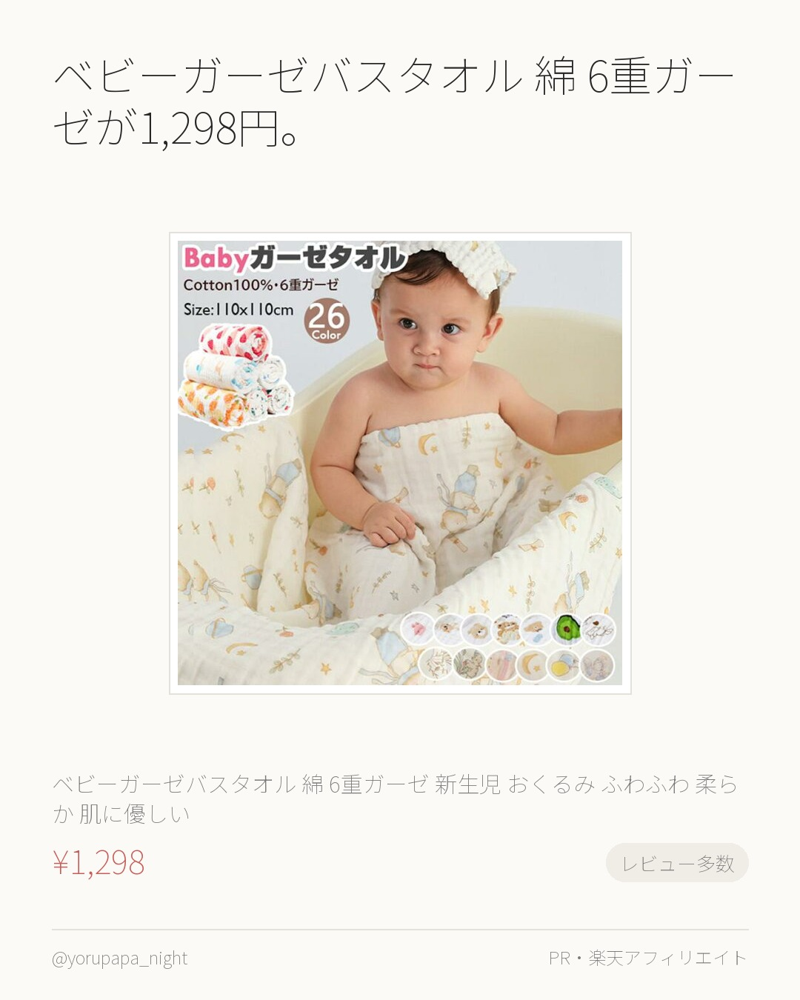
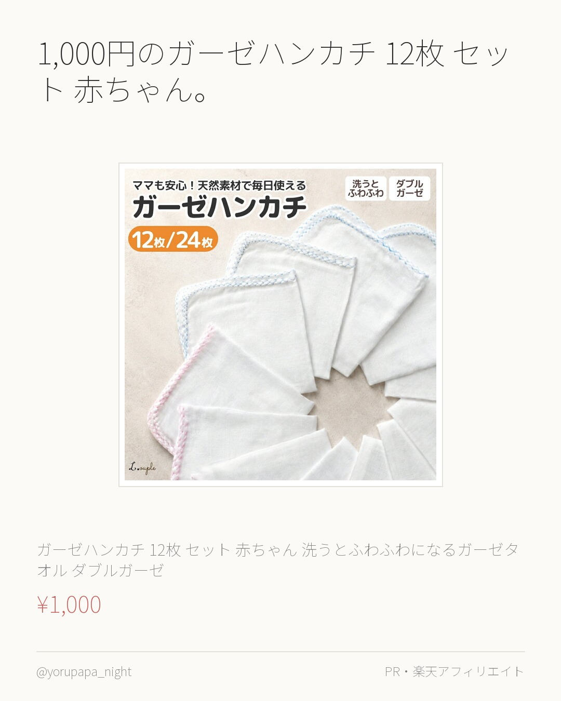
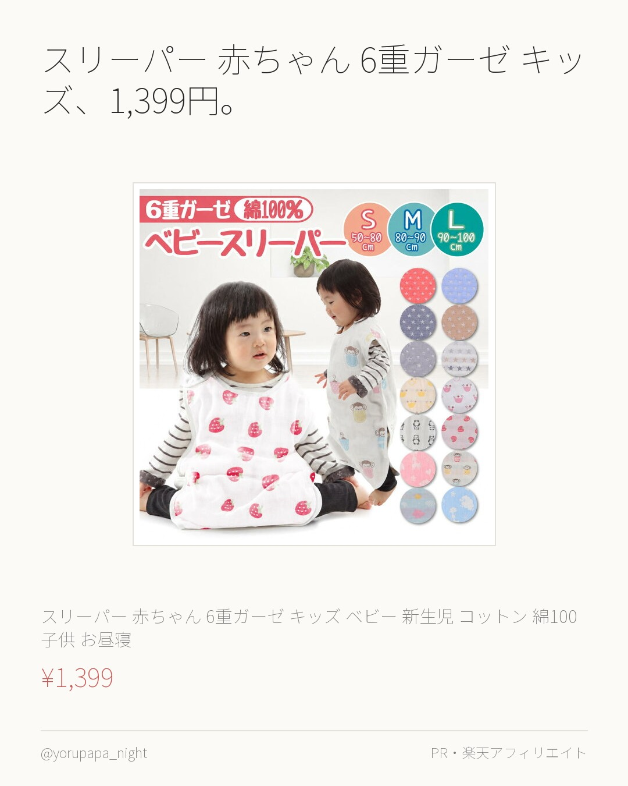
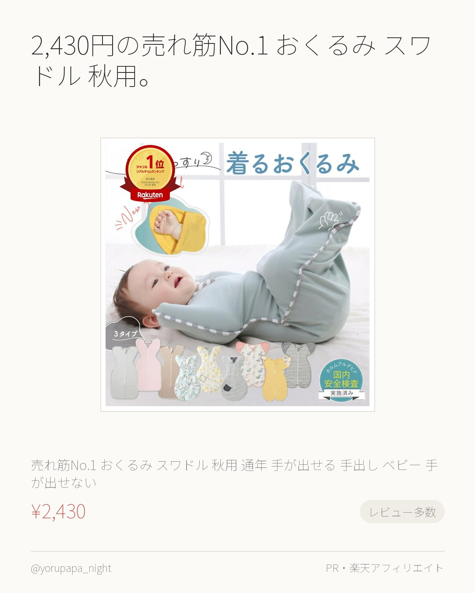
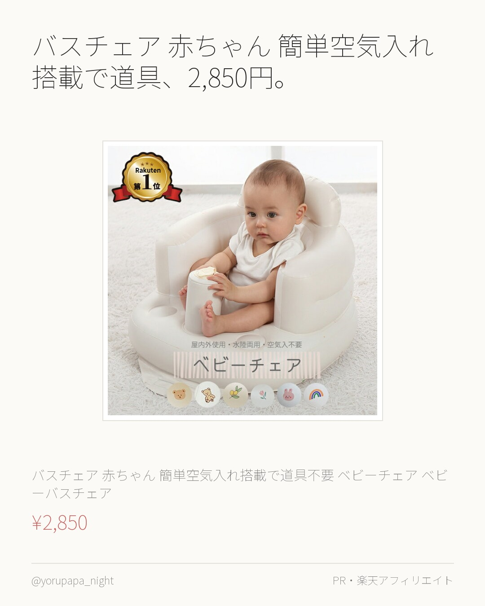
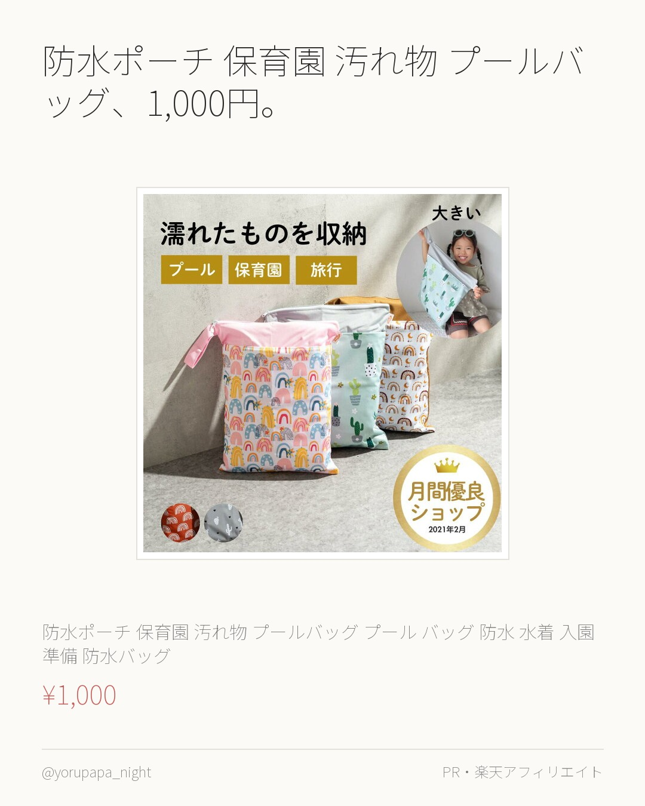
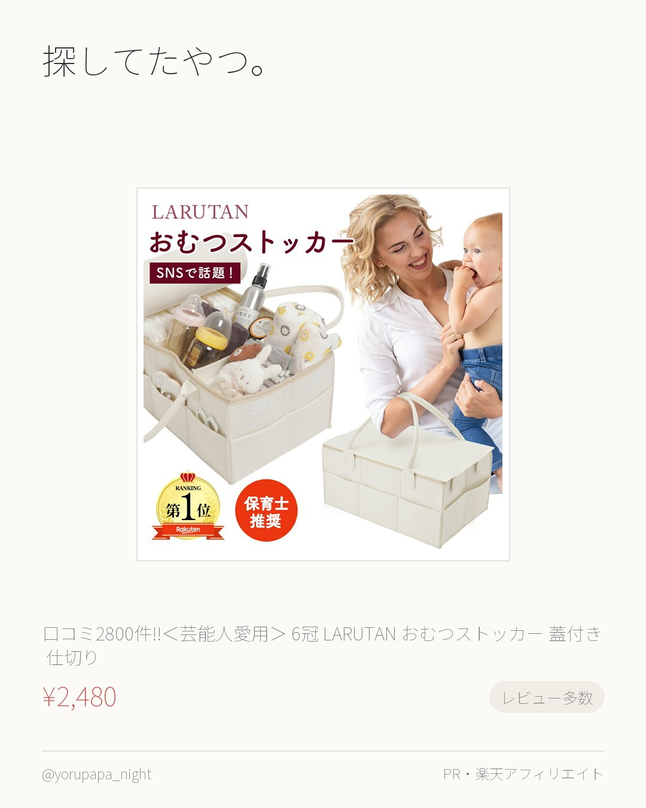
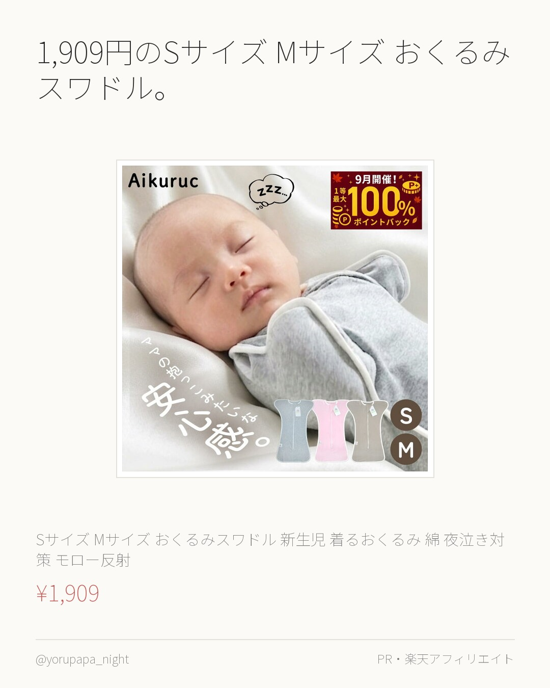
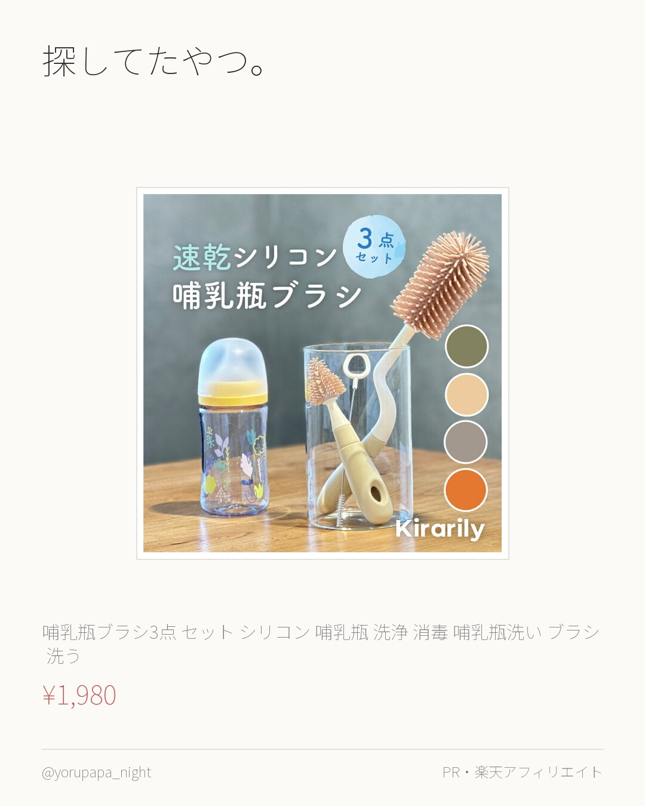
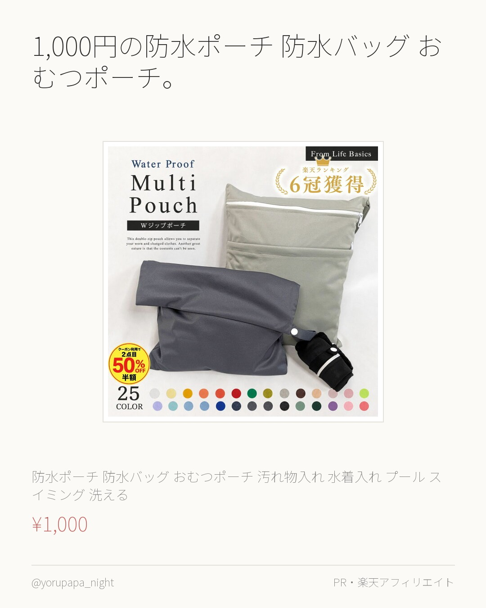

ベビーガーゼバスタオル 綿 6重ガーゼが1,298円。レビュー3,012件で4.59なのが決め手でした。色違いも見てみてください。
【ハンドタオル付き 好きなカラーを選べる 28color】ベビーガーゼバスタオル 綿100％ 6重ガーゼ 新生児 おくるみ ふわふわ 柔らか
¥1,298
楽天市場で見るよるぱぱ｜日中は会社員、夜と休日は育児担当。実際に使ったものだけ。
これまでの投稿をぜんぶ見る → 楽天ROOM／よるぱぱ
ベビーガーゼバスタオル 綿 6重ガーゼが1,298円。レビュー3,012件で4.59なのが決め手でした。色違いも見てみてください。
【ハンドタオル付き 好きなカラーを選べる 28color】ベビーガーゼバスタオル 綿100％ 6重ガーゼ 新生児 おくるみ ふわふわ 柔らか
¥1,298
楽天市場で見る
1,000円のガーゼハンカチ 12枚 セット 赤ちゃん。レビュー686件で4.63なのが決め手でした。使い回しが効きそう。
ガーゼハンカチ 12枚 セット 赤ちゃん 洗うとふわふわになるガーゼタオル ダブルガーゼ ベビー 綿100％ 30 × 30cm セット 無
¥1,000
楽天市場で見る
スリーパー 赤ちゃん 6重ガーゼ キッズ、1,399円。レビュー876件で4.54なのが決め手でした。迷ってるならまずこれから。
【楽天1位】スリーパー 赤ちゃん 6重ガーゼ スリーパー キッズ ベビー 新生児 コットン 綿100 子供 お昼寝 出産祝い パジャマ 春
¥1,399
楽天市場で見る
2,430円の売れ筋No.1 おくるみ スワドル 秋用。レビュー1,926件で4.52なのが決め手でした。迷ってるならまずこれから。
売れ筋No.1 おくるみ スワドル 秋用 通年 手が出せる 手出し ベビー 手が出せない スリーパー モロー 反射 寝かしつけ 赤ちゃん 新
¥2,430
楽天市場で見る
バスチェア 赤ちゃん 簡単空気入れ搭載で道具、2,850円。レビュー511件で4.56なのが決め手でした。色違いも見てみてください。
【楽天1位】バスチェア 赤ちゃん 簡単空気入れ搭載で道具不要 ベビーチェア ベビーバスチェア ベビーソファ お風呂用品 ベビー 椅子 イス
¥2,850
楽天市場で見る
防水ポーチ 保育園 汚れ物 プールバッグ、1,000円。レビュー4.63（287件）なのが決め手でした。気になってた人はぜひ。
【2点で10%OFFクーポン】【 楽天1位】 防水ポーチ 保育園 汚れ物 プールバッグ プール バッグ 防水 防水ポーチ 水着 保育園 入園
¥1,000
楽天市場で見る
探してたやつ。口コミ2800件!!＜芸能人愛用＞ 6冠。レビュー2,902件で4.48なのが決め手でした。使い回しが効きそう。
口コミ2800件!!＜芸能人愛用＞楽天1位6冠≪レビュー特典≫LARUTAN おむつストッカー 蓋付き 仕切り 収納 オムツストッカー お世
¥2,480
楽天市場で見る
1,909円のSサイズ Mサイズ おくるみスワドル。レビュー673件で4.52なのが決め手でした。使い回しが効きそう。
【毎日★10%OFF】＼助産師監修／【Aikuruc ハグルミ】Sサイズ Mサイズ おくるみスワドル 新生児 着るおくるみ 綿100％ 夜泣
¥1,909
楽天市場で見る
探してたやつ。哺乳瓶ブラシ3点 セット シリコン 哺乳瓶。レビュー4.58（403件）なのが決め手でした。気になってた人はぜひ。
【Kirarily★楽天1位】 哺乳瓶ブラシ3点 セット シリコン 哺乳瓶 洗浄 消毒 哺乳瓶洗い ブラシ 洗う ボトルブラシ シリコンブラ
¥1,980
楽天市場で見る
1,000円の防水ポーチ 防水バッグ おむつポーチ。レビュー4.67（199件）なのが決め手でした。気になってた人はぜひ。
＼複数購入★5％オフCP／【CP利用2点目500円オフ】 防水ポーチ 防水バッグ おむつポーチ 汚れ物入れ 水着入れ プール スイミング 洗
¥1,000
楽天市場で見る